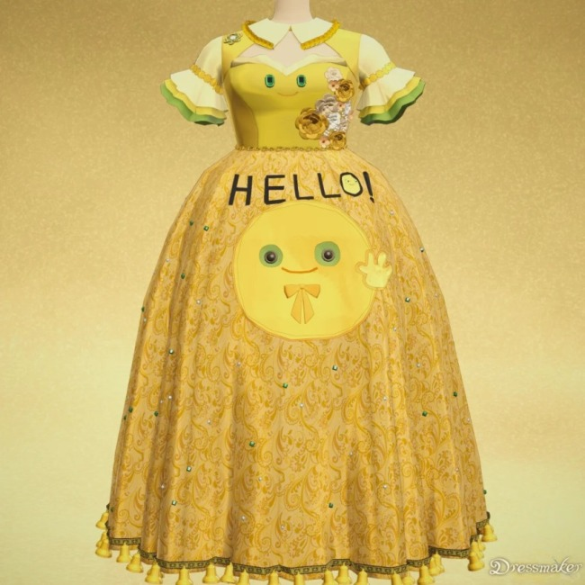

9月21日，缝纫模拟游戏《针影裁梦（Dressmaker）》登陆 Steam，几天就冲进 全球畅销榜前十，发售不到 24小时 就收回了开发成本。常年蹲独立游戏的朋友大姚跟我说：这游戏你得写写。
它不是大厂 3A，开发者只有 Jonathan 一个人。而他做它的理由很私人——伴侣 Sabrina 患上结缔组织疾病，没法在现实中做缝纫，他就在 2025 年 7 月做出原型，让她在虚拟世界里继续手里的针线。
一个关于爱的副业，意外“出圈”成了生意。
很多人以为是玩法出彩，其实恰恰相反——论缝纫机制，它谈不上颠覆。
它没砸宣发，流量来自“为患病妻子做游戏”这个故事本身：真实感自带传播力，比任何投放都猛。玩家嗑的不是针线，是那句“她不能在现实缝纫，就在游戏里替她圆”，评论区一片“破防”。
口碑不是运营出来的，是用户自己长出来的——长尾效应，才刚开始。
更值得琢磨的是它背后的生意：单人开发、24小时回本，没有大厂的制作与发行重压，Steam 抽成后依然盈利。一个两人的项目，能和预算上亿的 3A 同台竞技畅销榜。
可这到底是平台对内容更友好，还是只是情绪红利的一次性爆发？没人敢下定论。
或许下一个《针影裁梦》需要的，不只有才华，还有一点运气。
大姚后来跟我说，他已经把这游戏推荐给了太太——“不是为了玩，是想让她知道，有人真的把爱做成了东西。”
对开发者，是“小成本也能被看见”；对玩家，是“游戏可以有温度”。真诚，永远是最好的流量入口。